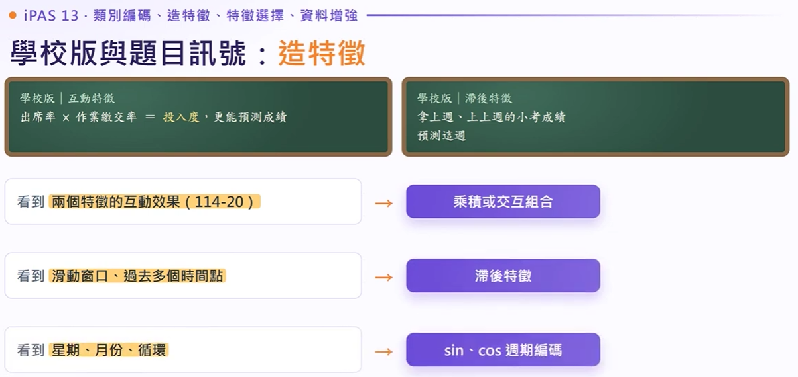
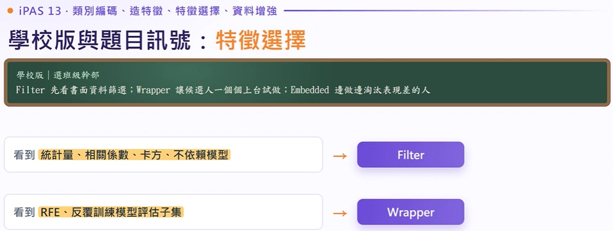
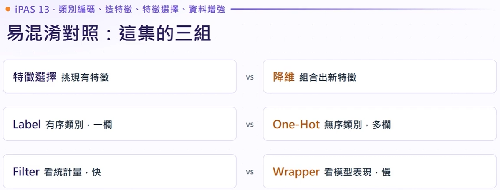
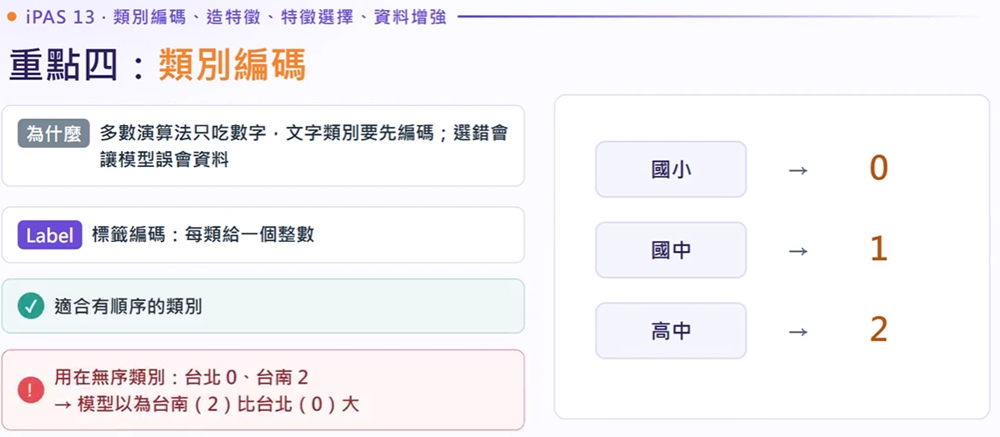

【iPAS AI應用規劃師】類別編碼、造新特徵、特徵選擇與資料增強
AI 團隊為四個專案統一添加了「隨機水平翻轉 (Random Horizontal Flip)」資料增強：
專案A 貓狗分類 |
專案B 車型分類 |
專案C 行人偵測 |
專案D 手寫數字辨識
本集 9 大精華投影片快速索引 韋哥投影片對照
點擊卡片快速跳轉至各投影片詳解，支援點擊圖片全螢幕放大與時間軸精確對齊
第十三章後半 · 重點四～七 全景架構 命題命中率最高
L23301 兩回共 9 題，115 年考 6 題！本集四大重點直接命中 6 題
重點七 · 資料增強（Data Augmentation）與泛化能力 影像與表格增強
製造更多訓練樣本 ➔ 模型見過更多變化 ➔ 泛化能力更強
- • 變換範例：原本的貓咪照片 ➔ 左右水平翻轉、旋轉 10 度、調暗一點，一口氣產生 3 張新樣本！以後不同角度、光線的貓咪都認得出來。
- • 鐵則一（標籤必須仍正確）：貓左右翻還是貓；但手寫數字『b』水平翻轉變成『d』、『6』垂直翻轉變成『9』，標籤若未改模型直接學錯！
- • 鐵則二（嚴防資料洩漏）：必須先切分好 Train / Validation / Test，只能對 Train Set 進行增強！若對全體資料增強，變形樣本會跨集滲漏，分數虛高。
重點五 · 從原始欄位造新特徵（組合或加工） 實務核心
特徵組合或加工常常比更換模型架構更有效！互動特徵與聚合特徵
- • 互動特徵（Interaction）：如「價格 × 滿意度」、「單價 × 數量 = 總金額」。捕捉兩個特徵「合在一起」才發生的綜合效應，分開看完全看不出來！
- • 聚合特徵（Aggregation）：如「過去 7 天點擊次數」、「使用者過去 30 天平均消費金額」。把時序或一連串瑣碎行為濃縮成一個代表性數值。
- • 威力總結：給模型更好消化的高價值資訊，效益遠大於盲目調參或換更複雜的黑箱演算法。
- 四. 類別編碼：文字轉數字，有序 Label、無序 One-Hot、高基數 Target / Embedding（命中 115-24、115-46）。
- 五. 從原始欄位造新特徵：互動相乘、滑動窗口滯後、週期 sin/cos（命中 114-20、115-26）。
- 六. 特徵選擇三法：Filter 海選、Wrapper 試鏡、Embedded 邊演邊選（解決過擬合）。
- 七. 資料增強：翻轉旋轉變換、SMOTE 合成少數類（命中 115-4、115-41）。
重點四：類別編碼 (Categorical Encoding)
演算法只吃矩陣數字，字串特徵必須轉換。用錯編碼會讓模型直接曲解特徵關係！
| 編碼方式 | 原理機制 | 最佳適用場景 | 致命缺點與陷阱 |
|---|---|---|---|
| Label Encoding 標籤編碼 |
每類給予整數值 (國小:0, 國中:1, 高中:2) |
有序類別 教育程度、會員階級 |
無序類別會被強加大小權重（誤認台南 2 比台北 0 大） |
| One-Hot Encoding 獨熱編碼 |
每類開獨立新欄位，是則 1 其餘 0 (紅:[1,0,0], 綠:[0,1,0]) |
無序且低基數 顏色、性別、低維狀態 |
遇高基數 (如 8000 種商品) 產生維度爆炸與記憶體耗盡 |
| Target Encoding 目標編碼 |
用該類別在目標答案的平均值取代 (預測房價時台北代入台北平均) | 高基數且強相關 僅需固定 1 欄 |
極易引發資料洩漏 (Data Leakage)，需用交叉擬合 (OOF) |
| Embedding 嵌入向量 |
學出低維稠密向量 (如 32 維)，具備語意距離 | 深度學習推薦系統 高基數巨量類別 |
需要神經網路反向傳播訓練，黑盒子不易直接解釋 |
平均值是由目標標籤計算出來的。若把驗證集或當前樣本自己的房價答案算進去，等於「提早偷看考題答案」，驗證分數會大幅虛高！
正確做法：訓練資料必須使用 交叉擬合 (Out-of-Fold, OOF)，計算每一筆資料時絕對不用到自己的答案；驗證與測試集則嚴格僅套用訓練集學出來的靜態對照表。
- 看到「教育程度、會員等級、有順序」 ➔ 秒選
Label Encoding - 看到「城市、顏色、無順序」 ➔ 秒選
One-Hot Encoding - 看到「高基數、上千種類別、維度爆炸、記憶體爆掉」 ➔ 改用
Target Encoding或Embedding - 看到
to_categorical➔ Keras 將標籤轉換為 One-Hot 的專屬函式
重點五：從原始欄位造新特徵 (Feature Engineering)
原始特徵往往資訊量不足，加工組合特徵常常比直接換模型更有效！
互動特徵 (Interaction)
相乘或相除捕捉協同效應。如：價格 × 滿意度、出席率 × 作業繳交率。單獨看平淡，合在一起才顯現關鍵影饗力。
滯後特徵 (Lag)
時間序列的核心，取 t-1 (昨天)、t-7 (上週同天)。搭配滑動窗口 (Sliding Window) 與移動平均，濾除每日波動。
週期編碼 (Cyclical)
星期、小時具備循環性。若直接用 1~7，模型會以為週日(7)與週一(1)差距最遠。必須用 sin 與 cos 投影到二維圓環。
【互動演示】週期編碼：為什麼星期要轉成 Sin & Cos？
拖曳滑桿選擇星期幾，觀察圓環上的連續投影與首尾相接特性：
週日 (7) 與週一 (1) 差距為 |7 - 1| = 6，模型誤判其為時間跨度最遠的兩天！
週日與週一的 Euclidean 距離為 0.868，完美呈現兩天相鄰首尾相接的真實連續性。
手上有每日來客數、日期與天氣，模型在週末前後預測奇差無比，最佳工程組合拳：
學校版與題目訊號 · 造特徵秒殺反應 題感秒殺
出席率×作業繳交率 · 拿上週成績預測這週 · 互動、滯後、週期編碼

- 看到「兩個特徵的互動效果（114-20）」：➔ 立即選擇乘積（相乘）或交互組合。
- 看到「滑動窗口、過去多個時間點」：➔ 立即選擇滯後特徵（Lag Feature）。
- 看到「星期、月份、24 小時循環」：➔ 立即選擇 sin、cos 週期編碼（解決 23 點與 0 點斷層問題）。
重點六：特徵選擇三法 (Feature Selection)
特徵不是愈多愈好！過多特徵引發過擬合與運算瓶頸。特徵選擇是挑現有子集（不產生新軸，區別於 PCA 降維）。
Filter 過濾法
用統計指標（相關係數、卡方檢定、ANOVA 變異數分析）一次比對單一特徵與目標標籤。
Wrapper 包裝法
用模型評估指標挑選，如 RFE（遞迴特徵消除）、前向選擇。每次刪減或增加一個特徵並重訓。
Embedded 嵌入法
在模型訓練過程中同步完成特徵篩選。如 L1 Lasso 正則化（把無用權重壓為 0）、決策樹重要性。
千萬不能一開始就上 Wrapper (RFE)！300 個特徵若全排列重訓，運算時間會直接炸裂。
黃金兩段式：
第一輪先用 Filter 初篩（快速砍掉 200 個無關特徵），
第二輪再用 Embedded (Lasso) 或 Wrapper 精挑。
學校版比喻與訊號 · 特徵選擇三法（海選、試鏡、邊演邊選） 解題秒殺
Filter 看書面篩選 · Wrapper 一個個上台試做 · Embedded 邊做邊淘汰

- • Filter 過濾法（海選）：先看書面成績單！關鍵字：統計量、相關係數、卡方檢定、互資訊、不依賴模型。速度極快但忽略特徵組合效應。
- • Wrapper 包裝法（試鏡）：讓候選人輪流上台試做看效果！關鍵字：RFE（遞迴特徵消除）、反覆訓練模型評估子集。效果最佳但運算最慢。
- • Embedded 嵌入法（邊演邊選）：在正式工作表現中邊做邊淘汰！如 Lasso 回歸（L1 正則化將係數壓縮至 0）、隨機森林特徵重要度。
重點七：資料增強 (Data Augmentation) 與 SMOTE
製造合理變形擴展樣本多樣性，提升模型泛化能力（Generalization）。
【動態模擬】SMOTE 少數類合成樣本原理： x_new = x_A + λ × (x_B - x_A)
點擊按鈕，觀察在少數類兩點連線上隨機插值生成的新樣本點：
貓左右翻轉依然是貓；但手寫英文字母
b 水平翻轉會變成 d，數字 6 旋轉會變成 9。若標籤沒跟著改，等於餵給模型毒藥數據！這就是開場思考題「手寫數字翻轉後分數大跌」的根本原因。
嚴禁對整體資料增強後才切分 Train/Validation/Test。否則同一張圖的原圖與微調版會同時存在於訓練與驗證集中，造成嚴重的資料洩漏 (Data Leakage)，驗證分數虛高卻在正式上線時爆掉。
這集帶走四句話 · 考前 30 秒記憶口訣 終極必背
文字變數字 · 原始欄位加工 · 特徵選擇三法 · 資料增強兩鐵則
-
四
文字變數字： 有順序用 Label、沒順序用 One-Hot、類別多時別用 One-Hot！
-
五
造新特徵： 互動、滯後、週期：原始欄位加工，常常比換模型更有效！
-
六
特徵選擇三法： 海選（Filter）、試鏡（Wrapper）、邊演邊選（Embedded）！
-
七
資料增強： 標籤要還是對的，而且只對訓練資料做！
易混淆對照 · 本集三大組觀念火線辨析 必考陷阱
特徵選擇 vs 降維 · Label vs One-Hot · Filter vs Wrapper

-
① 特徵選擇 vs 降維特徵選擇：挑現有特徵（欄位子集，不產生新特徵）。
降維：組合出全新軸向特徵（如 PCA，特徵意義改變）。 -
② Label vs One-Hot 編碼Label：有序類別（1 欄整數）。
One-Hot：無序類別（多欄 0/1）；高基數時忌用 One-Hot。 -
③ Filter vs Wrapper 特徵選擇Filter：看統計指標，速度快，不依賴模型。
Wrapper：看模型實際表現，需反覆訓練，速度慢。
影片時間軸逐字稿檢索
重點六 · 特徵選擇三法（對抗過擬合與維度災難） 架構對比
特徵太多導致模型慢、過擬合、難解釋！特徵選擇 vs 降維的本質差異
- • 特徵太多的三大痛點：運算變慢、容易過擬合（死記訓練集雜訊，遇到新資料失準）、模型缺乏可解釋性。
- • 特徵選擇（Feature Selection）：從現有特徵中挑出有用的「子集」，不產生任何新特徵，欄位意義完整保留！
- • 降維（Dimensionality Reduction）：將原本多個特徵投影或旋轉組合成全新座標軸（如 PCA 主成分），特徵本身已經是融合後的新變數。
重點四 · 類別編碼（Label 編碼與無序陷阱） 必考核心
有順序才能用 Label 編碼！無序類別亂用 Label 會誤導模型產生假大小關係

- • 為什麼要編碼：多數演算法（回歸、KNN、神經網路）只吃純數字，文字類別必須轉化。
- • Label 標籤編碼：每類分配一個連續整數（如：國小 ➔ 0、國中 ➔ 1、高中 ➔ 2）。
- • 適用情境：天然具有大小或順序關係的類別（教育程度、軍階、會員等級）。
- • 致命警示：若用在「無序類別」（如：台北 0、台中 1、台南 2），線性模型或距離計算會誤以為「台南比台北大 2 倍」，造成嚴重錯誤歸納！